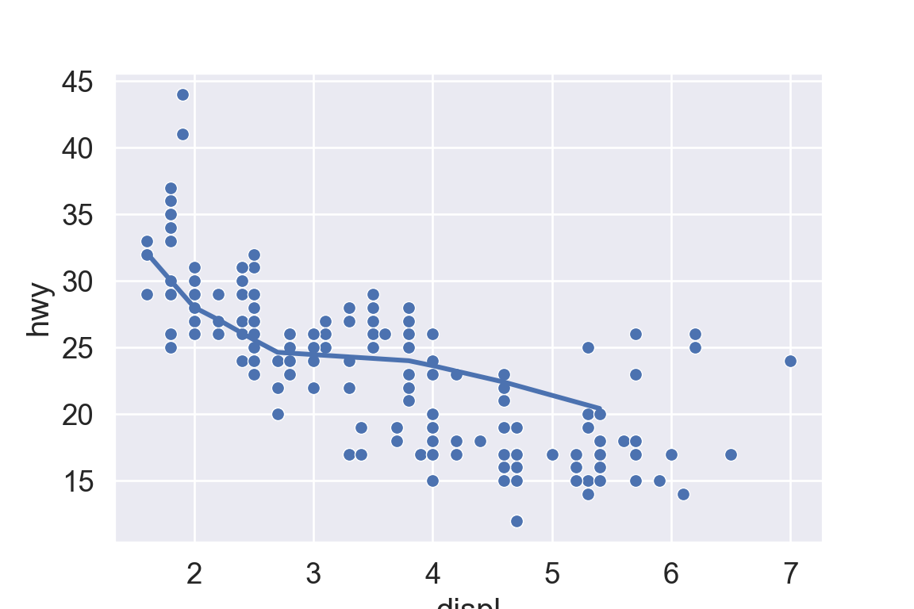

We use the ggplot2 package in tidyverse for static visualization. The closest thing in Python is the plotnine library. But we mostly use Seaborn library, which is based on matplotlib, due to its popularity in the Python data science community. For Julia users, I recommend Makie.jl.
# Load the pandas libraryimport pandas as pd# Load numpy for array manipulationimport numpy as np# Load seaborn plotting libraryimport seaborn as snsimport matplotlib.pyplot as plt# Set font sizes in plotssns.set(font_scale =1.25)# Display all columnspd.set_option('display.max_columns', None)
A typical data science project:
1 Data visualization
“The simple graph has brought more information to the data analyst’s mind than any other device.”
# A tibble: 234 × 11
manufacturer model displ year cyl trans drv cty hwy fl
<chr> <chr> <dbl> <int> <int> <chr> <chr> <int> <int> <chr>
1 audi a4 1.8 1999 4 auto(l5) f 18 29 p
2 audi a4 1.8 1999 4 manual(m5) f 21 29 p
3 audi a4 2 2008 4 manual(m6) f 20 31 p
4 audi a4 2 2008 4 auto(av) f 21 30 p
5 audi a4 2.8 1999 6 auto(l5) f 16 26 p
6 audi a4 2.8 1999 6 manual(m5) f 18 26 p
7 audi a4 3.1 2008 6 auto(av) f 18 27 p
8 audi a4 quattro 1.8 1999 4 manual(m5) 4 18 26 p
9 audi a4 quattro 1.8 1999 4 auto(l5) 4 16 25 p
10 audi a4 quattro 2 2008 4 manual(m6) 4 20 28 p
class
<chr>
1 compact
2 compact
3 compact
4 compact
5 compact
6 compact
7 compact
8 compact
9 compact
10 compact
# … with 224 more rows
Tibbles are a generalized form of data frames, which are extensively used in tidyverse.
mpg data is available from the plotline package:
from plotnine.data import mpgmpg
manufacturer model displ year cyl trans drv cty hwy fl \
0 audi a4 1.8 1999 4 auto(l5) f 18 29 p
1 audi a4 1.8 1999 4 manual(m5) f 21 29 p
2 audi a4 2.0 2008 4 manual(m6) f 20 31 p
3 audi a4 2.0 2008 4 auto(av) f 21 30 p
4 audi a4 2.8 1999 6 auto(l5) f 16 26 p
.. ... ... ... ... ... ... .. ... ... ..
229 volkswagen passat 2.0 2008 4 auto(s6) f 19 28 p
230 volkswagen passat 2.0 2008 4 manual(m6) f 21 29 p
231 volkswagen passat 2.8 1999 6 auto(l5) f 16 26 p
232 volkswagen passat 2.8 1999 6 manual(m5) f 18 26 p
233 volkswagen passat 3.6 2008 6 auto(s6) f 17 26 p
class
0 compact
1 compact
2 compact
3 compact
4 compact
.. ...
229 midsize
230 midsize
231 midsize
232 midsize
233 midsize
[234 rows x 11 columns]
plt.figure()sns.relplot( data = mpg, kind ="scatter", x ="displ", y ="hwy",# Variables that define subsets to plot on different facets col ="class", col_wrap =4);plt.show()
A subplot for each car type and drive:
sns.relplot( data = mpg, kind ="scatter", x ="displ", y ="hwy",# Variables that define subsets to plot on different facets col ="class", row ="drv");plt.show()
ggplot(data = mpg, mapping =aes(x = displ, y = hwy)) +# Different color for each classgeom_point(mapping =aes(color = class)) +# Only display the line for subcompact carsgeom_smooth(data = mpg %>%filter(class =="subcompact"), se =FALSE)
plt.figure()ax = sns.scatterplot( data = mpg, x ="displ", y ="hwy");sns.regplot( data = mpg[mpg['class'] =="subcompact"], x ="displ", y ="hwy", scatter =False, lowess =True, ax = ax);plt.show()

6 Jitter
Jitter adds random noise to X and Y position of each element to avoid over-plotting.
geom_bar() makes the height of the bar proportional to the number of cases in each group (or if the weight aesthetic is supplied, the sum of the weights).
# A tibble: 234 × 11
manufacturer model displ year cyl trans drv cty hwy fl class
<chr> <chr> <dbl> <int> <int> <chr> <chr> <int> <int> <chr> <chr>
1 audi a4 1.8 1999 4 auto… f 18 29 p comp…
2 audi a4 1.8 1999 4 manu… f 21 29 p comp…
3 audi a4 2 2008 4 manu… f 20 31 p comp…
4 audi a4 2 2008 4 auto… f 21 30 p comp…
5 audi a4 2.8 1999 6 auto… f 16 26 p comp…
6 audi a4 2.8 1999 6 manu… f 18 26 p comp…
7 audi a4 3.1 2008 6 auto… f 18 27 p comp…
8 audi a4 quattro 1.8 1999 4 manu… 4 18 26 p comp…
9 audi a4 quattro 1.8 1999 4 auto… 4 16 25 p comp…
10 audi a4 quattro 2 2008 4 manu… 4 20 28 p comp…
# … with 224 more rows
ggplot(mpg, aes(x = displ, y = hwy)) +geom_point(aes(color = class)) +geom_smooth(se =FALSE) +labs(title ="Fuel efficiency generally decreases with engine size")
plt.figure()sns.relplot( data = mpg, kind ="scatter", x ="displ", y ="hwy").set( title ="Fuel efficiency generally decreases with engine size")plt.show()
ggplot(mpg, aes(displ, hwy)) +geom_point(aes(color = class)) +geom_smooth(se =FALSE) +labs(title ="Fuel efficiency generally decreases with engine size",subtitle ="Two seaters (sports cars) are an exception because of their light weight",caption ="Data from fueleconomy.gov" )
plt.figure()sns.relplot( data = mpg, kind ="scatter", x ="displ", y ="hwy").set( title ="Fuel efficiency generally decreases with engine size")plt.suptitle("Two seaters (sports cars) are an exception because of their light weight", fontsize =12)plt.show()
# A tibble: 7 × 11
# Groups: class [7]
manufacturer model displ year cyl trans drv cty hwy fl class
<chr> <chr> <dbl> <int> <int> <chr> <chr> <int> <int> <chr> <chr>
1 chevrolet corvette 5.7 1999 8 manu… r 16 26 p 2sea…
2 dodge caravan 2wd 2.4 1999 4 auto… f 18 24 r mini…
3 nissan altima 2.5 2008 4 manu… f 23 32 r mids…
4 subaru forester a… 2.5 2008 4 manu… 4 20 27 r suv
5 toyota toyota tac… 2.7 2008 4 manu… 4 17 22 r pick…
6 volkswagen jetta 1.9 1999 4 manu… f 33 44 d comp…
7 volkswagen new beetle 1.9 1999 4 manu… f 35 44 d subc…
Annotate points
ggplot(mpg, aes(x = displ, y = hwy)) +geom_point(aes(colour = class)) +geom_text(aes(label = model), data = best_in_class)
ggrepel package automatically adjusts labels so that they don’t overlap:
library("ggrepel")ggplot(mpg, aes(displ, hwy)) +geom_point(aes(colour = class)) +geom_point(size =3, shape =1, data = best_in_class) + ggrepel::geom_label_repel(aes(label = model), data = best_in_class)
I don’t know easy way to annotate, besides writing a loop.
# Locate the most efficient car in each classbest_in_class = mpg.sort_values( by ='hwy', ascending =False ).groupby('class').first()best_in_class
plt.figure()# Regression linesns.relplot( data = mpg, x ="displ", y ="hwy", hue ="class")# Loop to add text annotationfor i inrange(0, best_in_class.shape[0]): plt.text( x = best_in_class.displ[i], y = best_in_class.hwy[i], s = best_in_class.model[i] )plt.show()
plt.figure()ax = sns.regplot( data = mpg, x ="displ", y ="hwy", scatter =True, lowess =True,)ax.set_xlim(left =5, right =7)ax.set_ylim(bottom =10, top =30)plt.show()
With clipping (calculate smoothing line ignoring unseen data points)
There are five preset seaborn themes: darkgrid, whitegrid, dark, white, and ticks. They are each suited to different applications and personal preferences. The default theme is darkgrid.
sns.set_style("white")plt.figure()ax = sns.regplot( data = mpg, x ="displ", y ="hwy", scatter =True, lowess =True,)plt.show()
Tip
For academic papers, use the white theme in Seaborn or theme_bw in ggplot2.